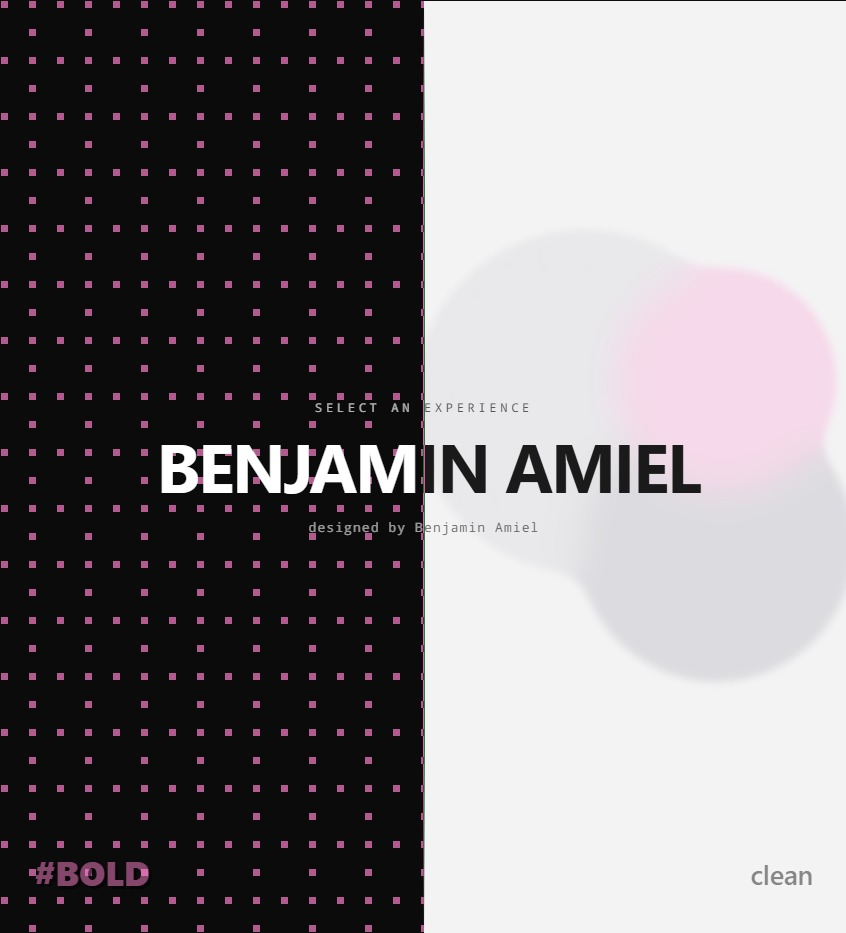
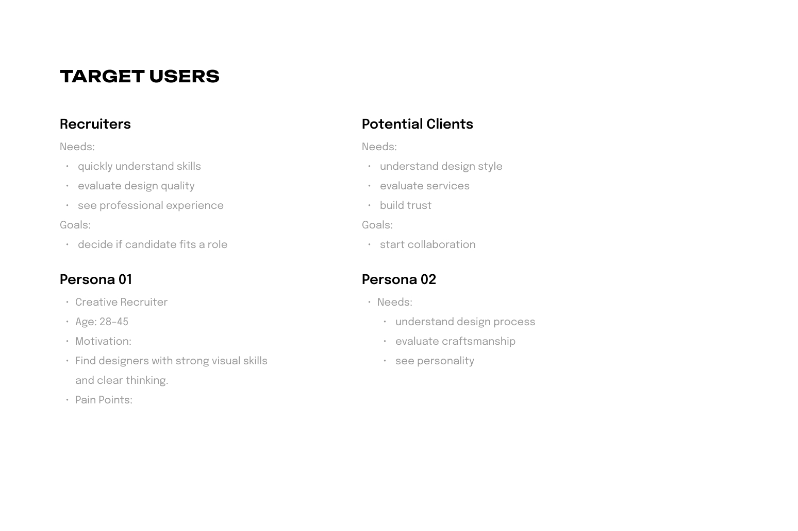
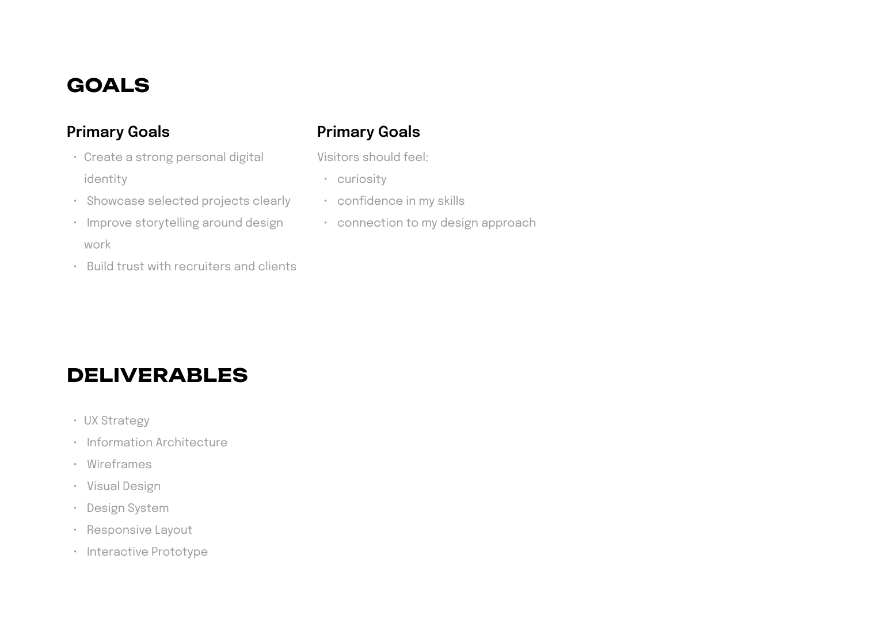
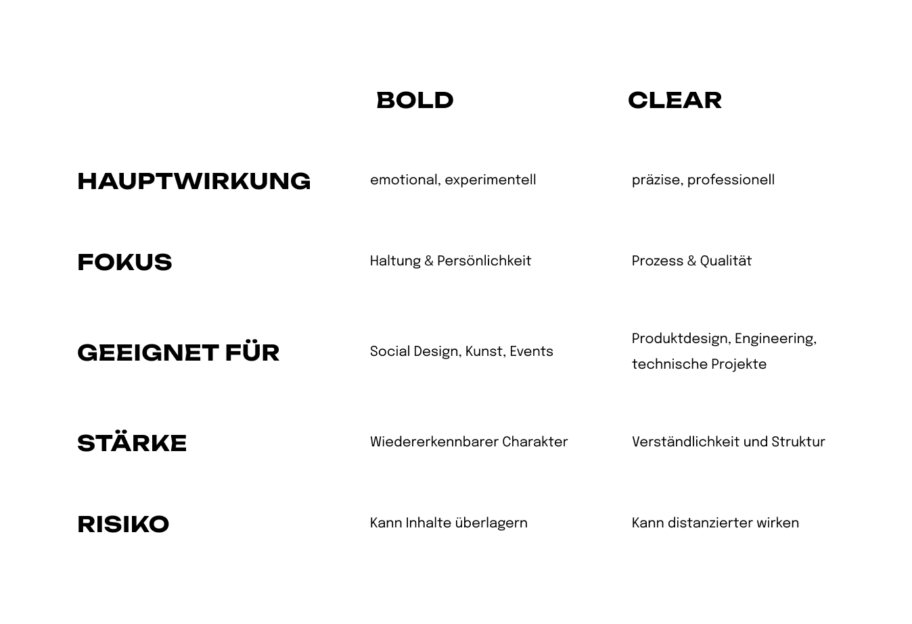
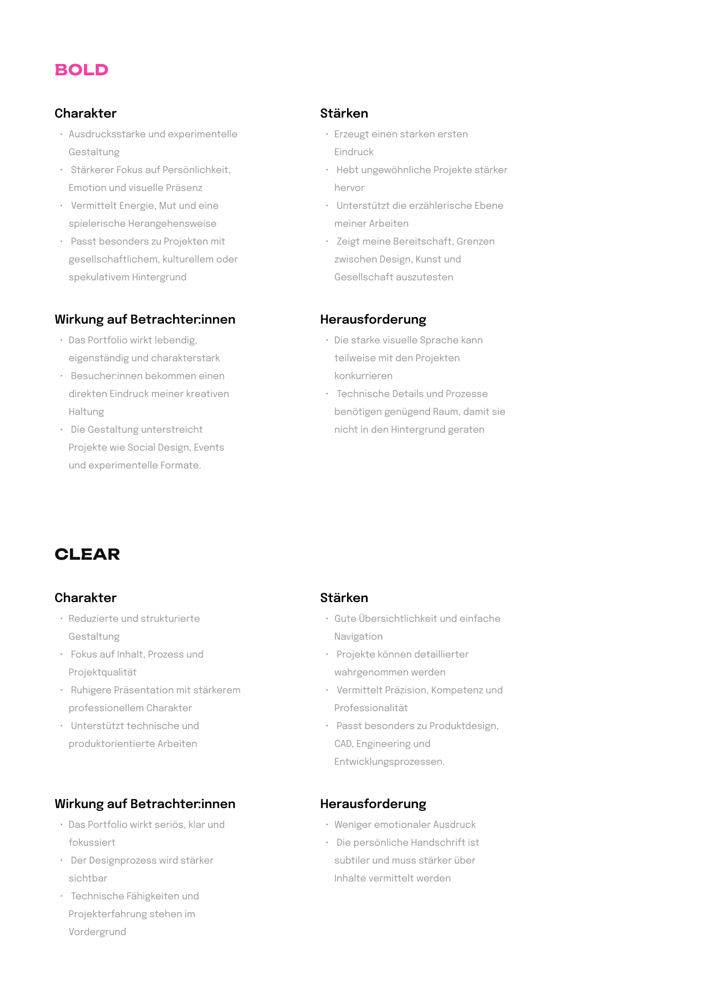
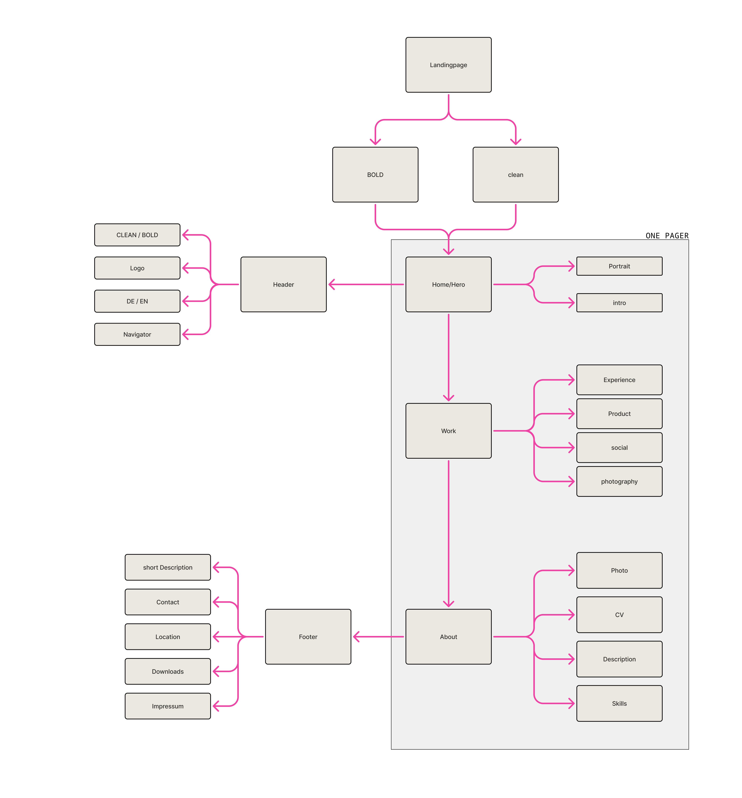
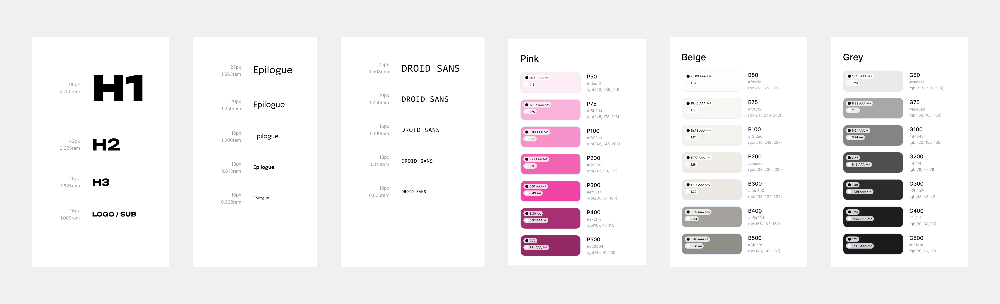
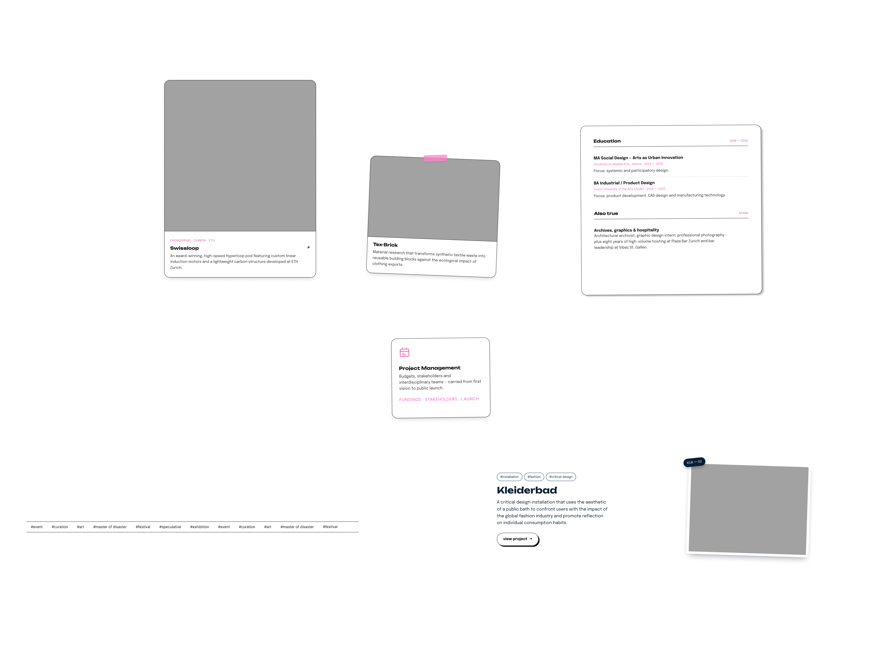
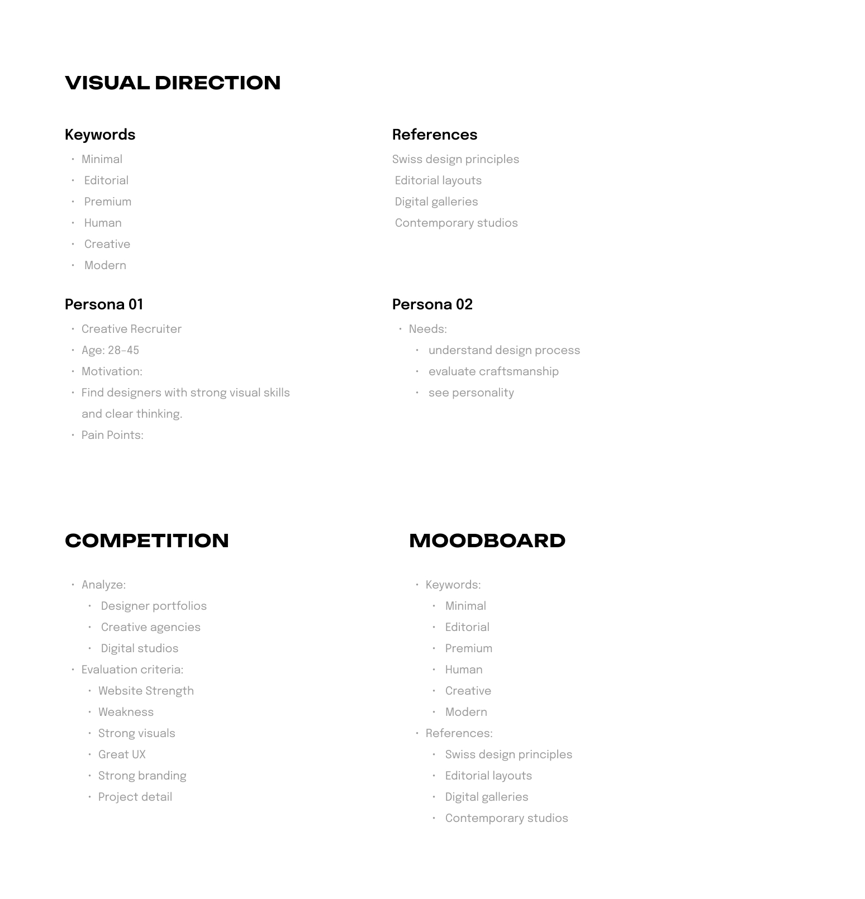
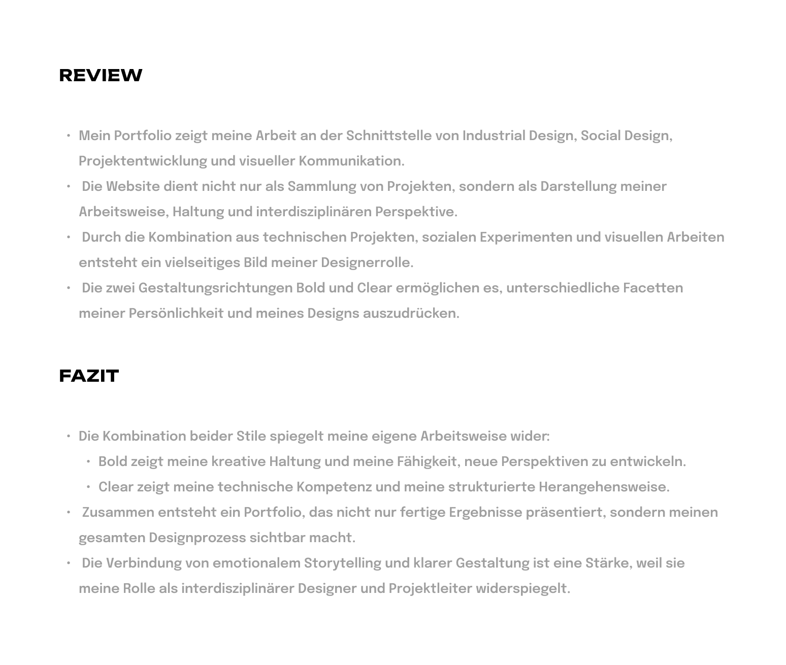

www.amiel.studio
Designing a digital identity that communicates creativity, simplicity and craftsmanship — a portfolio that feels personal and professional at the same time.

The context. amiel.studio is my personal portfolio website. It presents design work, creative projects and professional experience through a minimal, immersive digital experience — a personal-brand platform and a portfolio in one, for recruiters, potential clients and fellow creatives.
The problem. Classic portfolio sites show projects, but rarely convey personality, design philosophy or process. I wanted a site that feels personal and professional, shows selected work clearly, leaves a memorable first impression, and communicates design thinking beyond pure visuals.
The bet. Instead of forcing every project into one visual language, the site should be able to speak in two — one emotional, one precise — and let the visitor choose which side to meet me on.
Primary goals. Build a strong personal digital identity, show selected projects clearly, improve the storytelling around my design work, and build trust with recruiters and clients.
How it should feel. Visitors should feel curiosity, trust in my skills, and a genuine connection to how I approach design.
Two audiences visit the same site with different questions — one is hiring, the other wants to collaborate.

Creative Recruiter
28–45, looking for designers with strong visual skills and clear thinking.
Needs: grasp skills fast, judge design quality, see professional experience.
Goal: decide whether I fit an open role.
Potential Client
Wants to understand the design process, read the craft and recognise the person behind it.
Needs: understand my style, assess services, build trust.
Goal: start a collaboration.
Minimal, editorial, premium, human, creative, modern — grounded in Swiss design principles, editorial layouts, digital galleries and contemporary studios.


Clarity
Content should be immediately understandable.
Personality
The website should feel unique and human.
Simplicity vs. Explicity
Remove unnecessary elements, express through a unique experience.
Craft
Every detail contributes to the experience.
Bold vs. Clear
The central UX decision: not one look, but two design directions the visitor can switch between — the same content, two temperaments.
- Main effect
- emotional, experimental
- Focus
- attitude & personality
- Fits
- social design, art, events
- Strength
- recognisable character
- Risk
- can overpower the content
- Main effect
- precise, professional
- Focus
- process & quality
- Fits
- product design, engineering, technical projects
- Strength
- clarity and structure
- Risk
- can feel more distant
Attitude & energy
An expressive, experimental language with a stronger focus on personality and emotion. It makes a strong first impression, lifts unusual projects and supports the narrative layer — a willingness to test the borders between design, art and society.
The challenge: a strong visual voice can compete with the projects, and technical detail needs enough room to breathe.
Process & precision
A reduced, structured language focused on content, process and project quality. It reads as serious and focused, makes navigation easy and lets the design process become visible — a fit for product design, CAD, engineering and development work.
The challenge: less emotional expression, so the personal signature has to come through the content itself.


The landing page branches into Bold and Clear — both lead to the same one-pager, so the structure never forks, only the skin does.

A documented styleguide keeps both directions on the same foundation — one type scale, one colour system, shared tokens.


Typography. A sans-serif display face for headings (H1 68px, H2 42px, H3 26px, logo/sub 16px), Epilogue for body copy across five steps (25/20/16/13/10px), and Droid Sans Mono as an accent for labels and kickers.
Colour. Three documented scales — a pink accent (P50–P500, from #fdecf6 to #922964), a warm beige (B50–B500, #fdfdfc to #8f8e89) and a grey scale (G50–G500, #eaeaea to #1a1a1a) — each with checked AA/AAA contrast values.
My portfolio shows my work at the intersection of industrial design, social design, project development and visual communication. The site isn't just a collection of projects — it's a portrait of how I work, where I stand and how I see things across disciplines. Technical projects, social experiments and visual work together paint a many-sided picture of my role as a designer.
The two directions, Bold and Clear, let me express different facets of my personality and my design. Bold shows my creative attitude and my ability to develop new perspectives; Clear shows my technical competence and my structured approach.
The takeaway. Combining both isn't a compromise — it mirrors how I actually work. Together they make a portfolio that doesn't just present finished results, but keeps the whole design process visible. Pairing emotional storytelling with clear structure is a strength, because it reflects my role as an interdisciplinary designer and project lead.


